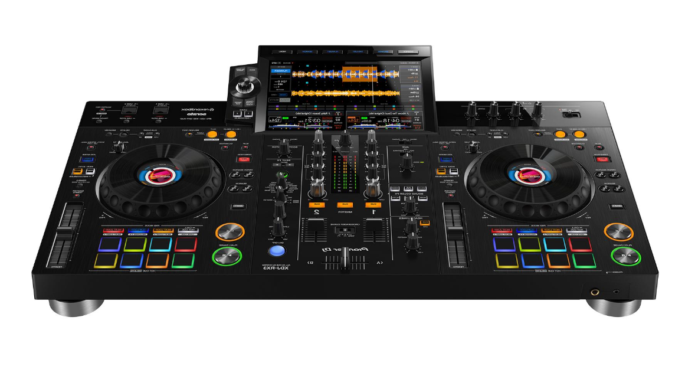

DJ Equipment
Discover the equipment DJs use, from modern all-in-one systems to mixers, headphones and speakers.
Explore Equipment →Explore the world of DJing
THE ART OF DJING
Discover the equipment, techniques and skills behind modern DJing.
Explore DJ Equipment
DJing is the art of selecting and mixing music to create a smooth and enjoyable experience. DJs use different equipment and techniques to control the music and keep the energy going.
This website explores some of the equipment used by DJs, as well as basic techniques that beginners can learn.
Discover the equipment DJs use, from modern all-in-one systems to mixers, headphones and speakers.
Explore Equipment →Learn about beatmatching, mixing, EQ and other techniques used to create smooth transitions.
Learn Techniques →Have a question about DJing or want to get in touch? Visit our contact page.
Contact Us →